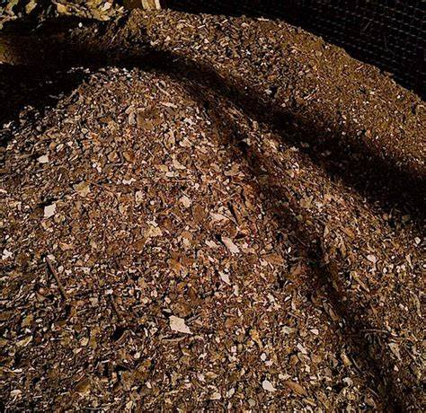

Tierra de hojas
La tierra de hoja o sustrato tierra de hoja, es un producto desarrollado en base a la compostación de hojas y residuos y desechos orgánicos. Es utilizado para mejorar el suelo en el que se cultiva.Además, es útil para jardines, áreas alrededor de arbustos, trasplantes, terrazas, sembrados de césped, macetas y almácigos. Tiene un alto contenido de materia orgánica que proporciona nutrientes esenciales a las plantas. Es natural y no tiene efectos negativos en el medio ambiente ni en la salud humana o animal.
Composta
El compost o la composta es un producto obtenido a partir de diferentes materiales de origen orgánico, los cuales son sometidos a un proceso biológico controlado de descomposición denominado compostaje.